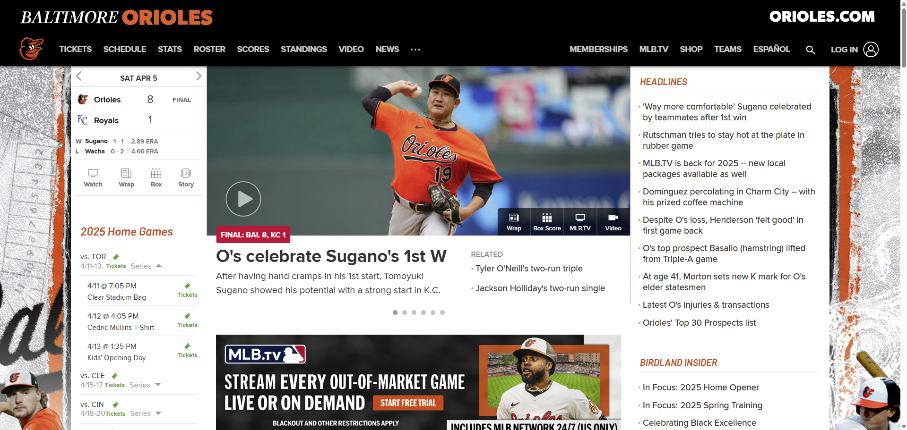

What is the URL of the website?
The URL of the website I chose for this assignment is https://www.mlb.com/orioles.
What is the name of the website?
The name of the website is "Official Baltimore Orioles Website | MLB.com".
Who is the site's target audience?
The target audience for the Orioles website are fans of the team interested in viewing tickets, game schedule, stats, roster, scores, news, etc. officially published by the MLB organization.
How is the site organized?
The site is organized in a hierarchical structure. The black banner at the top, which serves as the main navagation bar for the website, is static throughout all of the domain pages. There is a clear homepage, which can be returned to at any time by clicking the "ORIOLES.COM" button in the top left corner of the navigation bar. The website contains a high volume of information that can be accessed by starting at the homepage and either going down the navigation links to connected pages or clicking on highlighted game information and headline articles on the homepage.
Which CRAP Design Principle does the site use? Provide at least one example.
The website uses repetition of its colors to provide harmonious design. The color palette of the website includes the signature oriole orange, black, white, a light grey, and rare shades of blue on some pages. Very few, if any, other colors can be found throughout the domain. Images inserted into the pages from the Orioles park provide pops of color (e.g. blues and greens) outside the main color palette to avoid monotony.
What is the Audit Score according to the Accessibility Checker?
The Audit Score of the Orioles official website homepage is a surprising 51%, which makes it non-compliant. There are a whopping 89 critical issues found in the accessibility of the website. Some of these issues involve lack of alternative text for image elements, unclear names for links, touch targets (such as buttons or links) being too small, and low contrast between background and foreground colors. The disabilites affected by these issues include blindness, low vision, mobility, deafblindness, and colorblindness.
What is the site's effectiveness? Does it support users in completing actions accurately?
The site is effective in its layout and use of shorthand words in its navigation bar. The navigation bar utilizes one-word links for users to navigate to related pages. For some of these links, by hovering over them, there are options for more specific pages to go to (for example, by hovering over "TICKETS" in the navigation bar, I can then go to "Single Game Tickets" to get to a page on just the topic of single game tickets).
What is the site's efficiency? Can users can perform tasks quickly?
The readily apparent navigation in the top banner makes it easy for users to get where they need to go quickly, especially for the most sought out topics (tickets, schedule, stats, roster, and news). You do not have to click very deep into the hierarchical structure to get to any one page, usually 3-4 maximum. There is also a built-in search function to allow users to find the page they need without trying to dig deeper than the homepage, which may save time!
How is the engagement? Is it pleasant to use and appropriate for its industry/topic?
I would say that this website is pleasant to use. It is well designed aesthetically, does not contain misleading link names, is generally easy to use, and is fitted for use on mobile devices. It is also appropriate for its industry. There is zero doubt that you are reading information about the Orioles team when you come to this homepage - it shows off its American baseball pride from the headlines, upcoming games, and use of the unique orange color.
Make at least one recommendation to improve this website based on what you learned in this module.
I would recommend that all image elements are reformatted to include accessibility text that describe the context of the image. Many images are used throughout the website - not for aesthetics - that show specific player(s) in relation to an article or contain text that cannot be picked up by screen readers without the accessibility text.
Authored by Kaitlyn K. on April 5, 2025.